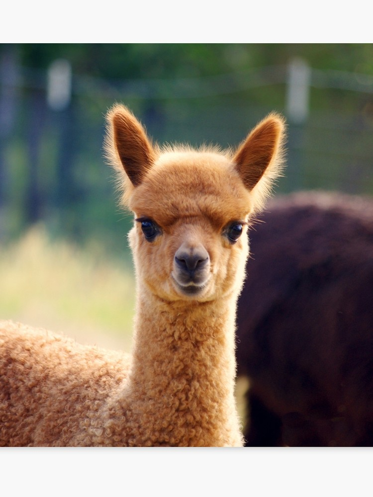
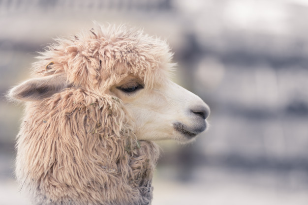
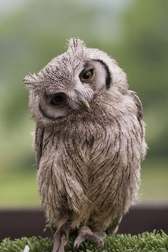

Это домашнее парнокопытное животное. Их разводят в высокогорном поясе Южной Америки. Большая их часть населяет Перу. Выращивают альпака для стрижки шерсти, из которой делают тёплые и мягкие одеяла, пледы и одежду, а из меха делают предметы для дома.
 The alpaca (Vicugna pacos) is a species of South American camelid. It is similar to, and often confused with, the llama. Alpaca fiber is used for making knitted and woven items, similar to sheep's wool. These items include blankets, sweaters, hats, gloves, scarves, a wide variety of textiles and ponchos in South America, and sweaters, socks, coats and bedding in other parts of the world.
 Совообра́зные (лат. Strigiformes) — отряд хищных птиц, включающий более 200 крупных и средней величины видов, в основном ночных птиц, распространённых во всех странах мира. В отряде два современных семейства: совиные, или настоящие совы, и сипуховые. Краткая характеристика: крупная голова, большие круглые глаза спереди головы, клюв короткий, хищный. Охотится ночью, оперение мягкое, полёт бесшумный, когти длинные и острые, окрас маскирующий.